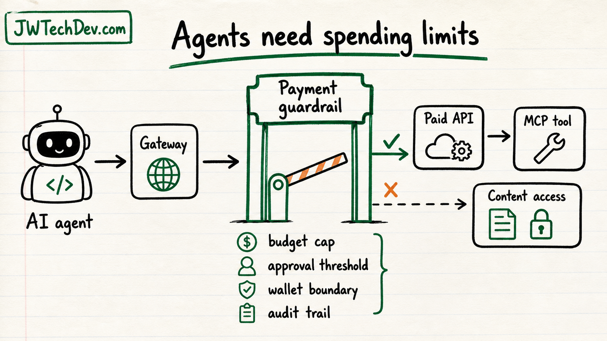

Agent payments make spending guardrails part of AI infrastructure
When agents can spend money, payment controls become part of the architecture.

Quick answer
If agents can pay for APIs, content, or services, spending becomes a tool boundary. The question is not just can the agent transact. The question is who set the limit, who can approve the spend, what got logged, and how the system stops abuse.
The money boundary
AWS announced AgentCore payments as generally available, which is a clear signal that agent transactions are moving from theory into infrastructure design.
That does not mean every beginner needs to build a payment agent tomorrow. It means the mental model has changed. Tool calls may not just read data or write records. They may trigger real cost.
What spending guardrails mean
A spending guardrail is more than a monthly budget. It can include per-action limits, approval thresholds, wallet separation, merchant or API allowlists, rate limits, fraud signals, and audit trails.
The safest posture is to treat money movement like a production write action. The agent should have scoped access, clear policy, and human review when risk crosses a threshold.
What builders should do
Separate free, metered, and paid tool calls in your architecture notes.
Put budgets and approval thresholds near the gateway, not buried in prompt text.
Log every transaction attempt, approval, rejection, and tool response.
Start with sandbox transactions before allowing real money movement.
Good first examples
A safe first project is an agent that estimates a cloud bill and asks for approval before purchasing a paid report.
Another is an agent that can compare paid API options but cannot buy until a human approves the exact vendor, cost, and purpose.
Bottom line
Agent payments are not just a commerce feature. They are an architecture lesson: once an AI system can spend, budgets, approvals, wallet boundaries, and observability become part of the agent's runtime.
Sources checked
Want the starter kit?
Grab the free JWTechDev.com starter kit if you want a practical way to connect cloud basics, AI workflows, and approval gates.
Get resources